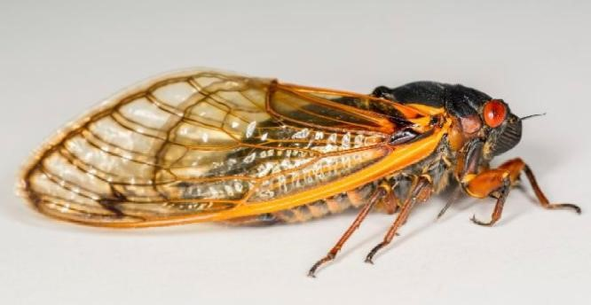

Cigarra.
Es un insecto hemíptero, este grupo se caracteriza porque tiene la porción basal del ala endurecida
y el resto es membranosa. El cuerpo está organizado en cabeza, tórax y abdomen. El tórax tiene las alas
y tres pares de patas. La cabeza tiene ojos compuestos. En el abdomen están los sistemas digestivo y
reproductor.
Reproducción:
Su reproducción es sexual. Las hembras mueren después de depositar los huevos. Este grupo de insectos
presentan metamorfosis incompleta: los jóvenes o ninfas nacen del huevo, su anatomía externa es similar a
los adultos con la diferencia de que no tienen las gónadas desarrolladas. Las ninfas se alimentan de la
savia de las raíces de las plantas. Al cabo de varias mudas se desarrolla el adulto. Los machos realizan un
sonido característico para atraer a la hembra durante el periodo reproductivo.
Habitad:
Pueden vivir tanto en climas templados como tropicales.
Características:
- Tienen cuerpos robustos y cabezas anchas.
- Tienen alas de membranas muy grandes.
- Es un insecto con una vida muy corta tanto que solo dura entre dos y tres semanas viviendo.
- Miden entre 15 y 65 mm de largo.
- Sus ojos son prominentes y separados.
